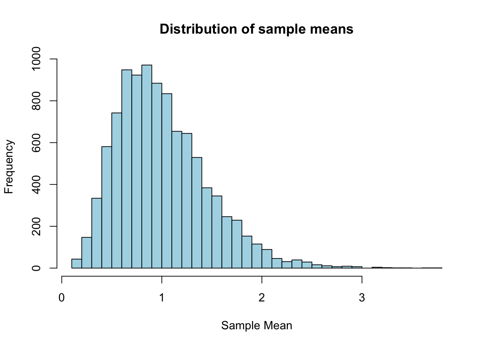

#function
simulation <- function (n.sim = 10000, n = 5, rate = 1) {
means <- numeric(n.sim)
for (i in 1:n.sim) {
draws <- rexp(n, rate = rate)
means[i] <- mean(draws)
}
return(means)
}
set.seed(1)
means <- simulation()
#plot
hist(means, breaks = 50, col = "lightblue", main = "Distribution of sample means",
xlab = "Sample Mean")